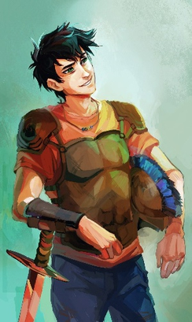
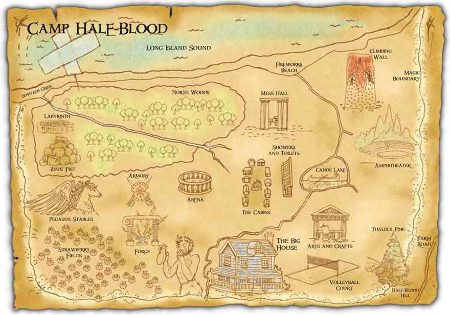

This series follows the adventures of Percy Jackson, who is the son of Poseidon, a Greek god. This page is a tribute to him.

The gods of Olympus never disappeared. They moved with the Western civilization, so right now Mount Olympus floats above the Empire State Building, the entrance to the Underworld is in Los Angeles, and the gods still have children with mortals. Those children are demigods (DUH), and monsters start hunting them the moment their powers begin to show. Percy is one of them, and the dyslexia and ADHD he struggles with at school turn out to be signs of a brain wired for ancient Greek and battle reflexes.
In the books, Percy tells everything himself (I LOVE THAT), and he is sarcastic, loyal and constantly in over his head, so even the scariest chapters have a joke somewhere in them.
Camp Half-Blood is a summer (sometimes winter) camp for demigods, where Percy and his friends attend. It's a place where they can learn to control their powers and protect themselves from monsters, under the guidance of their activities co-ordinator, Chiron, a centaur.
